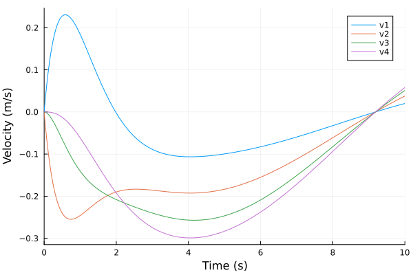
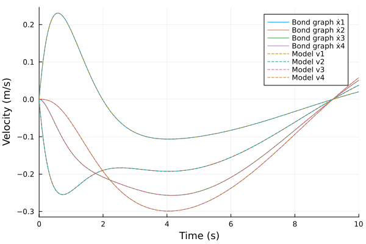
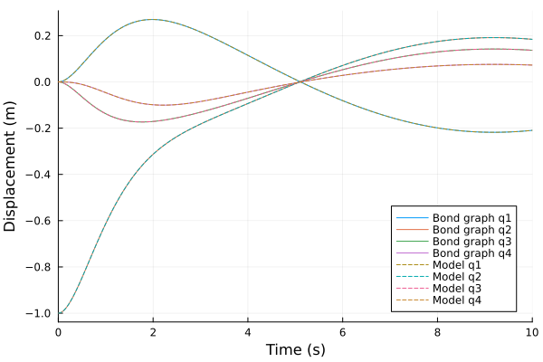

MSD system with N-DoF
The source files for all examples can be found in /examples.
Introduction
One of the advantages of a scripting approach to modeling is that a model can be built algorithmically. To showcase this with the bond-graph toolkit, we consider a mass–spring–damper (MSD) chain with $N$ degrees of freedom, built by repeating one bond pattern in a comprehension.
N-DoF MSD model
The chain has $N$ masses $m_1, \dots, m_N$ in a line, each moving along the line with displacement $x_i$ from its rest position (positive in the same direction for all masses). The first mass is attached to the ground by a spring $k_1$ and a damper $c_1$ in parallel. Each pair of neighbouring masses $i-1$ and $i$ is coupled by a spring $k_i$ and a damper $c_i$ in parallel, $i = 2, \dots, N$. The springs and dampers are linear and massless, and no external force acts on the chain.
Treat the ground as a mass $0$ that does not move, $x_0 = 0$. Spring–damper pair $i$ joins mass $i-1$ to mass $i$; when $x_{i-1} - x_i > 0$ it is compressed, so it pushes mass $i$ forward and mass $i-1$ back with the force
\[F_i = k_i\,(x_{i-1} - x_i) + c_i\,(\dot{x}_{i-1} - \dot{x}_i), \qquad i = 1, \dots, N.\]
Mass $i$ is pushed by pair $i$ behind it and pulled back by pair $i+1$ ahead of it (there is no pair $N+1$, so $F_{N+1} = 0$). Newton's 2nd law then gives, for every mass,
\[m_i\,\ddot{x}_i = F_i - F_{i+1}, \qquad i = 1, \dots, N.\]
For $N = 4$, written out:
\[m_1\,\ddot{x}_1 = -k_1\,x_1 - c_1\,\dot{x}_1 - k_2\,(x_1 - x_2) - c_2\,(\dot{x}_1 - \dot{x}_2),\]
\[m_2\,\ddot{x}_2 = k_2\,(x_1 - x_2) + c_2\,(\dot{x}_1 - \dot{x}_2) - k_3\,(x_2 - x_3) - c_3\,(\dot{x}_2 - \dot{x}_3),\]
\[m_3\,\ddot{x}_3 = k_3\,(x_2 - x_3) + c_3\,(\dot{x}_2 - \dot{x}_3) - k_4\,(x_3 - x_4) - c_4\,(\dot{x}_3 - \dot{x}_4),\]
\[m_4\,\ddot{x}_4 = k_4\,(x_3 - x_4) + c_4\,(\dot{x}_3 - \dot{x}_4).\]
All masses, stiffnesses and damping coefficients are one. The chain starts at rest with the spring between masses 1 and 2 stretched by one unit: $x_1 = 0$ and $x_2 = x_3 = x_4 = 1$, so the other springs are at their rest length.
Bond Graph Model
Karnopp, Margolis & Rosenberg (2012) model a mass as an inertia I:m with momentum $p = m\,\dot{x}$ and $\dot{p} = F$, a spring as a compliance C:1/k with displacement $q$ and effort $e = q/C = k\,q$, and a dashpot as a resistance R:c (§3.1, pp. 38–47). A mechanical 1-junction is a force balance at a common velocity, and a mechanical 0-junction expresses the geometric compatibility of velocities at a common force (§3.3, pp. 58, 61).
The bond graph has one 1-junction per velocity:
- the velocity $\dot{x}_1$ of mass 1, with
I:m₁,C:1/k₁andR:c₁on it; - the velocity $\dot{x}_i$ of mass $i = 2, \dots, N$, with
I:mᵢon it; - the relative velocity of spring–damper pair $i = 2, \dots, N$, with
C:1/kᵢandR:cᵢon it.
Between the junctions of masses $i-1$ and $i$ sits a 0-junction, which shares the force of pair $i$ among the three 1-junctions around it and relates their velocities. In short, the repeating pattern is 1 (mass i−1) → 0 → 1 (mass i), with a third bond 0 → 1 (pair i). The 2-DoF example draws the same pattern for two masses, with a force on the second.
Preliminary Steps
In this example we build and simulate the bond graph model of the chain for $N = 4$. Then we simulate the hand-derived equations above as a plain ModelingToolkit model and compare the two.
We import the bond-graph toolkit to model the system and OrdinaryDiffEqTsit5 to solve the resulting ODE. We also import ModelingToolkit's independent variable t and derivative D for the reference model at the end.
using BondGraphToolkit
using BondGraphToolkit.ModelingToolkit: t_nounits as t, D_nounits as D
using OrdinaryDiffEqTsit5
using PlotsSet the number of degrees of freedom. The construction below needs $N \geq 2$.
n = 44System Element Definitions
The elements of mass 1: its inertia, the spring to ground (a compliance $C = 1/k_1$) and the damper to ground:
@named m = Inertia(I = 1.0) # (kg) Mass
@named s = Compliance(C = 1.0) # (m/N) Spring compliance, 1/k
@named d = Resistance(R = 1.0) # (N⋅s/m) Damping coefficient\[ \begin{align} e\left( t \right) &= \mathtt{power.e}\left( t \right) \\ \mathtt{pout.e}\left( t \right) &= \mathtt{power.e}\left( t \right) \\ f\left( t \right) &= - \mathtt{pout.f}\left( t \right) + \mathtt{power.f}\left( t \right) \\ e\left( t \right) &= R ~ f\left( t \right) \end{align} \]
The masses $2, \dots, N$ reuse m, and the coupling dampers reuse d. The coupling springs are created per pair below, because the second one starts with an initial displacement.
Model Construction
Mass 1
Mass 1 is a 1-junction: its inertia, spring and damper share its velocity $\dot{x}_1$. Following the usual orientation (Karnopp, Margolis & Rosenberg 2012, §3.1, pp. 39, 42), the bonds of the passive elements point out of the junction into the elements (a bare member x). A free port named out, also pointing out of the junction (:out), will carry the force of the first coupling. The junction then states $0 = -\dot{p}_1 - k_1 q_1 - c_1\,\dot{x}_1 - e_{\text{out}}$, where the compliance's displacement $q_1 = x_1$ is the stretch of the spring to ground.
@named m1 = Junction1(m, d, s, :out)\[ \begin{align} 0 &= \mathrm{connect}\left( m_{+}power, core_{+}p1 \right) \\ 0 &= \mathrm{connect}\left( d_{+}power, core_{+}p2 \right) \\ 0 &= \mathrm{connect}\left( s_{+}power, core_{+}p3 \right) \\ 0 &= \mathrm{connect}\left( out, core_{+}p4 \right) \\ - \mathtt{core.p2.f}\left( t \right) &= - \mathtt{core.p1.f}\left( t \right) \\ - \mathtt{core.p3.f}\left( t \right) &= - \mathtt{core.p1.f}\left( t \right) \\ - \mathtt{core.p4.f}\left( t \right) &= - \mathtt{core.p1.f}\left( t \right) \\ 0 &= - \mathtt{core.p1.e}\left( t \right) - \mathtt{core.p2.e}\left( t \right) - \mathtt{core.p3.e}\left( t \right) - \mathtt{core.p4.e}\left( t \right) \\ \frac{\mathrm{d}\mathtt{m.p}\left( t \right)}{\mathrm{d}t} &= \mathtt{m.e}\left( t \right) \\ \mathtt{m.e}\left( t \right) &= \mathtt{m.power.e}\left( t \right) \\ \mathtt{m.pout.e}\left( t \right) &= \mathtt{m.power.e}\left( t \right) \\ \mathtt{m.f}\left( t \right) &= - \mathtt{m.pout.f}\left( t \right) + \mathtt{m.power.f}\left( t \right) \\ \mathtt{m.f}\left( t \right) &= \frac{\mathtt{m.p}\left( t \right)}{\mathtt{m.I}} \\ \mathtt{d.e}\left( t \right) &= \mathtt{d.power.e}\left( t \right) \\ \mathtt{d.pout.e}\left( t \right) &= \mathtt{d.power.e}\left( t \right) \\ \mathtt{d.f}\left( t \right) &= - \mathtt{d.pout.f}\left( t \right) + \mathtt{d.power.f}\left( t \right) \\ \mathtt{d.e}\left( t \right) &= \mathtt{d.R} ~ \mathtt{d.f}\left( t \right) \\ \frac{\mathrm{d}\mathtt{s.q}\left( t \right)}{\mathrm{d}t} &= \mathtt{s.f}\left( t \right) \\ \mathtt{s.e}\left( t \right) &= \mathtt{s.power.e}\left( t \right) \\ \mathtt{s.pout.e}\left( t \right) &= \mathtt{s.power.e}\left( t \right) \\ \mathtt{s.f}\left( t \right) &= - \mathtt{s.pout.f}\left( t \right) + \mathtt{s.power.f}\left( t \right) \\ \mathtt{s.e}\left( t \right) &= \frac{\mathtt{s.q}\left( t \right)}{\mathtt{s.C}} \end{align} \]
Masses 2 to N
Each further mass is a 1-junction with a free port in, pointing into the junction from the coupling behind it (:in => :in), and its inertia m. Every mass but the last also has a port out, pointing out towards the next coupling. So mass $i$ states $\dot{p}_i = e_{\text{in}} - e_{\text{out}}$: the force from behind minus the force ahead.
masses = [Junction1(:in => :in, m, (i < n ? [:out] : [])...; name = Symbol(:m, i))
for i in 2:n]3-element Vector{System}:
Model m2:
Subsystems (4): see hierarchy(m2)
core
in
m
out
Equations (20):
11 standard: see equations(m2)
9 connecting: see equations(expand_connections(m2))
Unknowns (27): see unknowns(m2)
core₊p2₊f(t)
core₊p1₊f(t)
core₊p3₊f(t)
core₊p2₊e(t)
⋮
Parameters (1): see parameters(m2)
m₊I
Model m3:
Subsystems (4): see hierarchy(m3)
core
in
m
out
Equations (20):
11 standard: see equations(m3)
9 connecting: see equations(expand_connections(m3))
Unknowns (27): see unknowns(m3)
core₊p2₊f(t)
core₊p1₊f(t)
core₊p3₊f(t)
core₊p2₊e(t)
⋮
Parameters (1): see parameters(m3)
m₊I
Model m4:
Subsystems (3): see hierarchy(m4)
core
in
m
Equations (15):
9 standard: see equations(m4)
6 connecting: see equations(expand_connections(m4))
Unknowns (21): see unknowns(m4)
core₊p2₊f(t)
core₊p1₊f(t)
core₊p2₊e(t)
core₊p1₊e(t)
⋮
Parameters (1): see parameters(m4)
m₊ISpring–damper pairs
Pair $i$ is a 1-junction whose free port j0 points into it from the 0-junction (:j0 => :in), with its compliance and resistance bonds pointing out into the elements. It states $e_{\text{j0}} = q_i/C_i + c_i\,f$: the force carried to the 0-junction is the spring force plus the damper force, at the pair's relative velocity $f$.
The compliance of pair 2 starts at $q = -1$. The sign follows from the bond directions, as the 0-junction below shows: they make $q_i = x_{i-1} - x_i$, which is negative when the spring is stretched. The initial stretch of one unit is therefore $q_2 = -1$.
sds = [Junction1(Compliance(C = 1.0, q = i == 2 ? -1.0 : 0.0, name = :s), d, :j0 => :in;
name = Symbol(:sd, i))
for i in 2:n]3-element Vector{System}:
Model sd2:
Subsystems (4): see hierarchy(sd2)
core
s
d
j0
Equations (24):
15 standard: see equations(sd2)
9 connecting: see equations(expand_connections(sd2))
Unknowns (35): see unknowns(sd2)
core₊p2₊f(t)
core₊p1₊f(t)
core₊p3₊f(t)
core₊p2₊e(t)
⋮
Parameters (2): see parameters(sd2)
s₊C
d₊R
Model sd3:
Subsystems (4): see hierarchy(sd3)
core
s
d
j0
Equations (24):
15 standard: see equations(sd3)
9 connecting: see equations(expand_connections(sd3))
Unknowns (35): see unknowns(sd3)
core₊p2₊f(t)
core₊p1₊f(t)
core₊p3₊f(t)
core₊p2₊e(t)
⋮
Parameters (2): see parameters(sd3)
s₊C
d₊R
Model sd4:
Subsystems (4): see hierarchy(sd4)
core
s
d
j0
Equations (24):
15 standard: see equations(sd4)
9 connecting: see equations(expand_connections(sd4))
Unknowns (35): see unknowns(sd4)
core₊p2₊f(t)
core₊p1₊f(t)
core₊p3₊f(t)
core₊p2₊e(t)
⋮
Parameters (2): see parameters(sd4)
s₊C
d₊RCouplings
Each coupling is a 0-junction joining three free ports: out of mass $i-1$, in of mass $i$ and j0 of pair $i$. A plain connect of free ports forms that 0-junction: the efforts are shared and the signed flows sum to zero, each flow counted positive when its bond points into the 0-junction (Karnopp, Margolis & Rosenberg 2012, Eqs. 3.16–3.17, pp. 58–59). The signs come from the half-arrows chosen above, not from the order of the connect arguments.
The bond from mass $i-1$ points into the 0-junction and the bonds to mass $i$ and to pair $i$ point out of it. Flow continuity gives $\dot{x}_{i-1} = \dot{x}_i + f$, so the pair's velocity is $f = \dot{x}_{i-1} - \dot{x}_i$ and its displacement is $q_i = x_{i-1} - x_i$: positive when the spring is compressed. The common effort is then the force $F_i$ of the hand derivation, which enters mass $i$ with a plus sign (in) and mass $i-1$ with a minus sign (out), as in $m_i\,\ddot{x}_i = F_i - F_{i+1}$.
prev = [m1; masses[1:end-1]]
cons = [connect(prev[k].out, masses[k].in, sds[k].j0) for k in 1:n-1]
@named model = System(cons, t; systems = [m1; masses; sds])\[ \begin{align} 0 &= \mathrm{connect}\left( m1_{+}out, m2_{+}in, sd2_{+}j0 \right) \\ 0 &= \mathrm{connect}\left( m2_{+}out, m3_{+}in, sd3_{+}j0 \right) \\ 0 &= \mathrm{connect}\left( m3_{+}out, m4_{+}in, sd4_{+}j0 \right) \\ 0 &= \mathrm{connect}\left( m_{+}power, core_{+}p1 \right) \\ 0 &= \mathrm{connect}\left( d_{+}power, core_{+}p2 \right) \\ 0 &= \mathrm{connect}\left( s_{+}power, core_{+}p3 \right) \\ 0 &= \mathrm{connect}\left( out, core_{+}p4 \right) \\ - \mathtt{m1.core.p2.f}\left( t \right) &= - \mathtt{m1.core.p1.f}\left( t \right) \\ - \mathtt{m1.core.p3.f}\left( t \right) &= - \mathtt{m1.core.p1.f}\left( t \right) \\ - \mathtt{m1.core.p4.f}\left( t \right) &= - \mathtt{m1.core.p1.f}\left( t \right) \\ 0 &= - \mathtt{m1.core.p1.e}\left( t \right) - \mathtt{m1.core.p2.e}\left( t \right) - \mathtt{m1.core.p3.e}\left( t \right) - \mathtt{m1.core.p4.e}\left( t \right) \\ \frac{\mathrm{d}\mathtt{m1.m.p}\left( t \right)}{\mathrm{d}t} &= \mathtt{m1.m.e}\left( t \right) \\ \mathtt{m1.m.e}\left( t \right) &= \mathtt{m1.m.power.e}\left( t \right) \\ \mathtt{m1.m.pout.e}\left( t \right) &= \mathtt{m1.m.power.e}\left( t \right) \\ \mathtt{m1.m.f}\left( t \right) &= - \mathtt{m1.m.pout.f}\left( t \right) + \mathtt{m1.m.power.f}\left( t \right) \\ \mathtt{m1.m.f}\left( t \right) &= \frac{\mathtt{m1.m.p}\left( t \right)}{\mathtt{m1.m.I}} \\ \mathtt{m1.d.e}\left( t \right) &= \mathtt{m1.d.power.e}\left( t \right) \\ \mathtt{m1.d.pout.e}\left( t \right) &= \mathtt{m1.d.power.e}\left( t \right) \\ \mathtt{m1.d.f}\left( t \right) &= - \mathtt{m1.d.pout.f}\left( t \right) + \mathtt{m1.d.power.f}\left( t \right) \\ \mathtt{m1.d.e}\left( t \right) &= \mathtt{m1.d.R} ~ \mathtt{m1.d.f}\left( t \right) \\ \frac{\mathrm{d}\mathtt{m1.s.q}\left( t \right)}{\mathrm{d}t} &= \mathtt{m1.s.f}\left( t \right) \\ \mathtt{m1.s.e}\left( t \right) &= \mathtt{m1.s.power.e}\left( t \right) \\ \mathtt{m1.s.pout.e}\left( t \right) &= \mathtt{m1.s.power.e}\left( t \right) \\ \mathtt{m1.s.f}\left( t \right) &= - \mathtt{m1.s.pout.f}\left( t \right) + \mathtt{m1.s.power.f}\left( t \right) \\ \mathtt{m1.s.e}\left( t \right) &= \frac{\mathtt{m1.s.q}\left( t \right)}{\mathtt{m1.s.C}} \\ 0 &= \mathrm{connect}\left( \in, core_{+}p1 \right) \\ 0 &= \mathrm{connect}\left( m_{+}power, core_{+}p2 \right) \\ 0 &= \mathrm{connect}\left( out, core_{+}p3 \right) \\ - \mathtt{m2.core.p2.f}\left( t \right) &= \mathtt{m2.core.p1.f}\left( t \right) \\ - \mathtt{m2.core.p3.f}\left( t \right) &= \mathtt{m2.core.p1.f}\left( t \right) \\ 0 &= \mathtt{m2.core.p1.e}\left( t \right) - \mathtt{m2.core.p2.e}\left( t \right) - \mathtt{m2.core.p3.e}\left( t \right) \\ \frac{\mathrm{d}\mathtt{m2.m.p}\left( t \right)}{\mathrm{d}t} &= \mathtt{m2.m.e}\left( t \right) \\ \mathtt{m2.m.e}\left( t \right) &= \mathtt{m2.m.power.e}\left( t \right) \\ \mathtt{m2.m.pout.e}\left( t \right) &= \mathtt{m2.m.power.e}\left( t \right) \\ \mathtt{m2.m.f}\left( t \right) &= - \mathtt{m2.m.pout.f}\left( t \right) + \mathtt{m2.m.power.f}\left( t \right) \\ \mathtt{m2.m.f}\left( t \right) &= \frac{\mathtt{m2.m.p}\left( t \right)}{\mathtt{m2.m.I}} \\ 0 &= \mathrm{connect}\left( \in, core_{+}p1 \right) \\ 0 &= \mathrm{connect}\left( m_{+}power, core_{+}p2 \right) \\ 0 &= \mathrm{connect}\left( out, core_{+}p3 \right) \\ - \mathtt{m3.core.p2.f}\left( t \right) &= \mathtt{m3.core.p1.f}\left( t \right) \\ - \mathtt{m3.core.p3.f}\left( t \right) &= \mathtt{m3.core.p1.f}\left( t \right) \\ 0 &= \mathtt{m3.core.p1.e}\left( t \right) - \mathtt{m3.core.p2.e}\left( t \right) - \mathtt{m3.core.p3.e}\left( t \right) \\ \frac{\mathrm{d}\mathtt{m3.m.p}\left( t \right)}{\mathrm{d}t} &= \mathtt{m3.m.e}\left( t \right) \\ \mathtt{m3.m.e}\left( t \right) &= \mathtt{m3.m.power.e}\left( t \right) \\ \mathtt{m3.m.pout.e}\left( t \right) &= \mathtt{m3.m.power.e}\left( t \right) \\ \mathtt{m3.m.f}\left( t \right) &= - \mathtt{m3.m.pout.f}\left( t \right) + \mathtt{m3.m.power.f}\left( t \right) \\ \mathtt{m3.m.f}\left( t \right) &= \frac{\mathtt{m3.m.p}\left( t \right)}{\mathtt{m3.m.I}} \\ 0 &= \mathrm{connect}\left( \in, core_{+}p1 \right) \\ 0 &= \mathrm{connect}\left( m_{+}power, core_{+}p2 \right) \\ - \mathtt{m4.core.p2.f}\left( t \right) &= \mathtt{m4.core.p1.f}\left( t \right) \\ 0 &= \mathtt{m4.core.p1.e}\left( t \right) - \mathtt{m4.core.p2.e}\left( t \right) \\ \frac{\mathrm{d}\mathtt{m4.m.p}\left( t \right)}{\mathrm{d}t} &= \mathtt{m4.m.e}\left( t \right) \\ \mathtt{m4.m.e}\left( t \right) &= \mathtt{m4.m.power.e}\left( t \right) \\ \mathtt{m4.m.pout.e}\left( t \right) &= \mathtt{m4.m.power.e}\left( t \right) \\ \mathtt{m4.m.f}\left( t \right) &= - \mathtt{m4.m.pout.f}\left( t \right) + \mathtt{m4.m.power.f}\left( t \right) \\ \mathtt{m4.m.f}\left( t \right) &= \frac{\mathtt{m4.m.p}\left( t \right)}{\mathtt{m4.m.I}} \\ 0 &= \mathrm{connect}\left( s_{+}power, core_{+}p1 \right) \\ 0 &= \mathrm{connect}\left( d_{+}power, core_{+}p2 \right) \\ 0 &= \mathrm{connect}\left( j0, core_{+}p3 \right) \\ - \mathtt{sd2.core.p2.f}\left( t \right) &= - \mathtt{sd2.core.p1.f}\left( t \right) \\ \mathtt{sd2.core.p3.f}\left( t \right) &= - \mathtt{sd2.core.p1.f}\left( t \right) \\ 0 &= - \mathtt{sd2.core.p1.e}\left( t \right) - \mathtt{sd2.core.p2.e}\left( t \right) + \mathtt{sd2.core.p3.e}\left( t \right) \\ \frac{\mathrm{d}\mathtt{sd2.s.q}\left( t \right)}{\mathrm{d}t} &= \mathtt{sd2.s.f}\left( t \right) \\ \mathtt{sd2.s.e}\left( t \right) &= \mathtt{sd2.s.power.e}\left( t \right) \\ \mathtt{sd2.s.pout.e}\left( t \right) &= \mathtt{sd2.s.power.e}\left( t \right) \\ \mathtt{sd2.s.f}\left( t \right) &= - \mathtt{sd2.s.pout.f}\left( t \right) + \mathtt{sd2.s.power.f}\left( t \right) \\ \mathtt{sd2.s.e}\left( t \right) &= \frac{\mathtt{sd2.s.q}\left( t \right)}{\mathtt{sd2.s.C}} \\ \mathtt{sd2.d.e}\left( t \right) &= \mathtt{sd2.d.power.e}\left( t \right) \\ \mathtt{sd2.d.pout.e}\left( t \right) &= \mathtt{sd2.d.power.e}\left( t \right) \\ \mathtt{sd2.d.f}\left( t \right) &= - \mathtt{sd2.d.pout.f}\left( t \right) + \mathtt{sd2.d.power.f}\left( t \right) \\ \mathtt{sd2.d.e}\left( t \right) &= \mathtt{sd2.d.R} ~ \mathtt{sd2.d.f}\left( t \right) \\ 0 &= \mathrm{connect}\left( s_{+}power, core_{+}p1 \right) \\ 0 &= \mathrm{connect}\left( d_{+}power, core_{+}p2 \right) \\ 0 &= \mathrm{connect}\left( j0, core_{+}p3 \right) \\ - \mathtt{sd3.core.p2.f}\left( t \right) &= - \mathtt{sd3.core.p1.f}\left( t \right) \\ \mathtt{sd3.core.p3.f}\left( t \right) &= - \mathtt{sd3.core.p1.f}\left( t \right) \\ 0 &= - \mathtt{sd3.core.p1.e}\left( t \right) - \mathtt{sd3.core.p2.e}\left( t \right) + \mathtt{sd3.core.p3.e}\left( t \right) \\ \frac{\mathrm{d}\mathtt{sd3.s.q}\left( t \right)}{\mathrm{d}t} &= \mathtt{sd3.s.f}\left( t \right) \\ \mathtt{sd3.s.e}\left( t \right) &= \mathtt{sd3.s.power.e}\left( t \right) \\ \mathtt{sd3.s.pout.e}\left( t \right) &= \mathtt{sd3.s.power.e}\left( t \right) \\ \mathtt{sd3.s.f}\left( t \right) &= - \mathtt{sd3.s.pout.f}\left( t \right) + \mathtt{sd3.s.power.f}\left( t \right) \\ \mathtt{sd3.s.e}\left( t \right) &= \frac{\mathtt{sd3.s.q}\left( t \right)}{\mathtt{sd3.s.C}} \\ \mathtt{sd3.d.e}\left( t \right) &= \mathtt{sd3.d.power.e}\left( t \right) \\ \mathtt{sd3.d.pout.e}\left( t \right) &= \mathtt{sd3.d.power.e}\left( t \right) \\ \mathtt{sd3.d.f}\left( t \right) &= - \mathtt{sd3.d.pout.f}\left( t \right) + \mathtt{sd3.d.power.f}\left( t \right) \\ \mathtt{sd3.d.e}\left( t \right) &= \mathtt{sd3.d.R} ~ \mathtt{sd3.d.f}\left( t \right) \\ 0 &= \mathrm{connect}\left( s_{+}power, core_{+}p1 \right) \\ 0 &= \mathrm{connect}\left( d_{+}power, core_{+}p2 \right) \\ 0 &= \mathrm{connect}\left( j0, core_{+}p3 \right) \\ - \mathtt{sd4.core.p2.f}\left( t \right) &= - \mathtt{sd4.core.p1.f}\left( t \right) \\ \mathtt{sd4.core.p3.f}\left( t \right) &= - \mathtt{sd4.core.p1.f}\left( t \right) \\ 0 &= - \mathtt{sd4.core.p1.e}\left( t \right) - \mathtt{sd4.core.p2.e}\left( t \right) + \mathtt{sd4.core.p3.e}\left( t \right) \\ \frac{\mathrm{d}\mathtt{sd4.s.q}\left( t \right)}{\mathrm{d}t} &= \mathtt{sd4.s.f}\left( t \right) \\ \mathtt{sd4.s.e}\left( t \right) &= \mathtt{sd4.s.power.e}\left( t \right) \\ \mathtt{sd4.s.pout.e}\left( t \right) &= \mathtt{sd4.s.power.e}\left( t \right) \\ \mathtt{sd4.s.f}\left( t \right) &= - \mathtt{sd4.s.pout.f}\left( t \right) + \mathtt{sd4.s.power.f}\left( t \right) \\ \mathtt{sd4.s.e}\left( t \right) &= \frac{\mathtt{sd4.s.q}\left( t \right)}{\mathtt{sd4.s.C}} \\ \mathtt{sd4.d.e}\left( t \right) &= \mathtt{sd4.d.power.e}\left( t \right) \\ \mathtt{sd4.d.pout.e}\left( t \right) &= \mathtt{sd4.d.power.e}\left( t \right) \\ \mathtt{sd4.d.f}\left( t \right) &= - \mathtt{sd4.d.pout.f}\left( t \right) + \mathtt{sd4.d.power.f}\left( t \right) \\ \mathtt{sd4.d.e}\left( t \right) &= \mathtt{sd4.d.R} ~ \mathtt{sd4.d.f}\left( t \right) \end{align} \]
Analysing the model
mtkcompile reduces the model to its states: the momenta of the $N$ inertias and the displacements of the $N$ compliances.
sys = mtkcompile(model)\[ \begin{align} \frac{\mathrm{d}\mathtt{sd4.s.q}\left( t \right)}{\mathrm{d}t} &= \mathtt{sd4.d.f}\left( t \right) \\ \frac{\mathrm{d}\mathtt{sd3.s.q}\left( t \right)}{\mathrm{d}t} &= \mathtt{sd3.d.f}\left( t \right) \\ \frac{\mathrm{d}\mathtt{sd2.s.q}\left( t \right)}{\mathrm{d}t} &= \mathtt{sd2.d.f}\left( t \right) \\ \frac{\mathrm{d}\mathtt{m4.m.p}\left( t \right)}{\mathrm{d}t} &= \mathtt{sd4.core.p1.e}\left( t \right) + \mathtt{sd4.core.p2.e}\left( t \right) \\ \frac{\mathrm{d}\mathtt{m3.m.p}\left( t \right)}{\mathrm{d}t} &= \mathtt{sd3.core.p1.e}\left( t \right) + \mathtt{sd3.core.p2.e}\left( t \right) - \mathtt{sd4.core.p1.e}\left( t \right) - \mathtt{sd4.core.p2.e}\left( t \right) \\ \frac{\mathrm{d}\mathtt{m2.m.p}\left( t \right)}{\mathrm{d}t} &= \mathtt{sd2.core.p1.e}\left( t \right) + \mathtt{sd2.core.p2.e}\left( t \right) - \mathtt{sd3.core.p1.e}\left( t \right) - \mathtt{sd3.core.p2.e}\left( t \right) \\ \frac{\mathrm{d}\mathtt{m1.s.q}\left( t \right)}{\mathrm{d}t} &= \mathtt{m1.d.f}\left( t \right) \\ \frac{\mathrm{d}\mathtt{m1.m.p}\left( t \right)}{\mathrm{d}t} &= - \mathtt{m1.core.p2.e}\left( t \right) - \mathtt{m1.core.p3.e}\left( t \right) - \mathtt{m2.core.p2.e}\left( t \right) - \mathtt{m3.core.p2.e}\left( t \right) - \mathtt{m3.core.p3.e}\left( t \right) \end{align} \]
Print system states
unknowns(sys)8-element Vector{SymbolicUtils.BasicSymbolicImpl.var"typeof(BasicSymbolicImpl)"{SymReal}}:
sd4₊s₊q(t)
sd3₊s₊q(t)
sd2₊s₊q(t)
m4₊m₊p(t)
m3₊m₊p(t)
m2₊m₊p(t)
m1₊s₊q(t)
m1₊m₊p(t)Print system parameters
parameters(sys)12-element Vector{SymbolicUtils.BasicSymbolicImpl.var"typeof(BasicSymbolicImpl)"{SymReal}}:
m1₊m₊I
m1₊d₊R
m1₊s₊C
m2₊m₊I
m3₊m₊I
m4₊m₊I
sd2₊s₊C
sd2₊d₊R
sd3₊s₊C
sd3₊d₊R
sd4₊s₊C
sd4₊d₊RPrint the system's equations in terms of the states
full_equations(sys)\[ \begin{align} \frac{\mathrm{d}\mathtt{sd4.s.q}\left( t \right)}{\mathrm{d}t} &= \frac{\mathtt{m3.m.p}\left( t \right)}{\mathtt{m3.m.I}} + \frac{ - \mathtt{m4.m.p}\left( t \right)}{\mathtt{m4.m.I}} \\ \frac{\mathrm{d}\mathtt{sd3.s.q}\left( t \right)}{\mathrm{d}t} &= - \frac{ - \mathtt{m2.m.p}\left( t \right)}{\mathtt{m2.m.I}} - \frac{\mathtt{m3.m.p}\left( t \right)}{\mathtt{m3.m.I}} \\ \frac{\mathrm{d}\mathtt{sd2.s.q}\left( t \right)}{\mathrm{d}t} &= \frac{\mathtt{m1.m.p}\left( t \right)}{\mathtt{m1.m.I}} + \frac{ - \mathtt{m2.m.p}\left( t \right)}{\mathtt{m2.m.I}} \\ \frac{\mathrm{d}\mathtt{m4.m.p}\left( t \right)}{\mathrm{d}t} &= \frac{\mathtt{sd4.s.q}\left( t \right)}{\mathtt{sd4.s.C}} + \mathtt{sd4.d.R} ~ \left( \frac{\mathtt{m3.m.p}\left( t \right)}{\mathtt{m3.m.I}} + \frac{ - \mathtt{m4.m.p}\left( t \right)}{\mathtt{m4.m.I}} \right) \\ \frac{\mathrm{d}\mathtt{m3.m.p}\left( t \right)}{\mathrm{d}t} &= \frac{\mathtt{sd3.s.q}\left( t \right)}{\mathtt{sd3.s.C}} + \frac{ - \mathtt{sd4.s.q}\left( t \right)}{\mathtt{sd4.s.C}} + \mathtt{sd3.d.R} ~ \left( - \frac{ - \mathtt{m2.m.p}\left( t \right)}{\mathtt{m2.m.I}} - \frac{\mathtt{m3.m.p}\left( t \right)}{\mathtt{m3.m.I}} \right) - \mathtt{sd4.d.R} ~ \left( \frac{\mathtt{m3.m.p}\left( t \right)}{\mathtt{m3.m.I}} + \frac{ - \mathtt{m4.m.p}\left( t \right)}{\mathtt{m4.m.I}} \right) \\ \frac{\mathrm{d}\mathtt{m2.m.p}\left( t \right)}{\mathrm{d}t} &= \frac{\mathtt{sd2.s.q}\left( t \right)}{\mathtt{sd2.s.C}} + \frac{ - \mathtt{sd3.s.q}\left( t \right)}{\mathtt{sd3.s.C}} + \mathtt{sd2.d.R} ~ \left( \frac{\mathtt{m1.m.p}\left( t \right)}{\mathtt{m1.m.I}} + \frac{ - \mathtt{m2.m.p}\left( t \right)}{\mathtt{m2.m.I}} \right) - \mathtt{sd3.d.R} ~ \left( - \frac{ - \mathtt{m2.m.p}\left( t \right)}{\mathtt{m2.m.I}} - \frac{\mathtt{m3.m.p}\left( t \right)}{\mathtt{m3.m.I}} \right) \\ \frac{\mathrm{d}\mathtt{m1.s.q}\left( t \right)}{\mathrm{d}t} &= \frac{\mathtt{m1.m.p}\left( t \right)}{\mathtt{m1.m.I}} \\ \frac{\mathrm{d}\mathtt{m1.m.p}\left( t \right)}{\mathrm{d}t} &= - \frac{\mathtt{sd2.s.q}\left( t \right)}{\mathtt{sd2.s.C}} - \frac{\mathtt{sd3.s.q}\left( t \right)}{\mathtt{sd3.s.C}} - \frac{ - \mathtt{sd3.s.q}\left( t \right)}{\mathtt{sd3.s.C}} - \frac{\mathtt{sd4.s.q}\left( t \right)}{\mathtt{sd4.s.C}} - \frac{ - \mathtt{sd4.s.q}\left( t \right)}{\mathtt{sd4.s.C}} + \frac{ - \mathtt{m1.s.q}\left( t \right)}{\mathtt{m1.s.C}} + \frac{ - \mathtt{m1.d.R} ~ \mathtt{m1.m.p}\left( t \right)}{\mathtt{m1.m.I}} - \mathtt{sd2.d.R} ~ \left( \frac{\mathtt{m1.m.p}\left( t \right)}{\mathtt{m1.m.I}} + \frac{ - \mathtt{m2.m.p}\left( t \right)}{\mathtt{m2.m.I}} \right) \end{align} \]
Generated equations against the hand derivation
bgequations returns the same equations with the names we choose. Here, for $N = 4$, we rename the momenta to $p_i$, the displacements to $q_i$ and the parameters to $m_i$, $C_i = 1/k_i$ and $c_i$ (inside a let, so these helper names stay local):
let
@variables p₁(t) p₂(t) p₃(t) p₄(t) q₁(t) q₂(t) q₃(t) q₄(t)
@parameters m₁ m₂ m₃ m₄ C₁ C₂ C₃ C₄ c₁ c₂ c₃ c₄
J = [m1; masses]
p, q, M, C, c = [p₁, p₂, p₃, p₄], [q₁, q₂, q₃, q₄], [m₁, m₂, m₃, m₄], [C₁, C₂, C₃, C₄], [c₁, c₂, c₃, c₄]
S = [m1; sds]
rename = Dict([[J[i].m.p => p[i] for i in 1:n]; [J[i].m.I => M[i] for i in 1:n];
[S[i].s.q => q[i] for i in 1:n]; [S[i].s.C => C[i] for i in 1:n];
[S[i].d.R => c[i] for i in 1:n]])
bgequations(model; rename)
end\[ \begin{align} \frac{\mathrm{d}\mathtt{q_4}\left( t \right)}{\mathrm{d}t} &= \frac{\mathtt{p_3}\left( t \right)}{\mathtt{m_3}} + \frac{ - \mathtt{p_4}\left( t \right)}{\mathtt{m_4}} \\ \frac{\mathrm{d}\mathtt{q_3}\left( t \right)}{\mathrm{d}t} &= \frac{\mathtt{p_2}\left( t \right)}{\mathtt{m_2}} + \frac{ - \mathtt{p_3}\left( t \right)}{\mathtt{m_3}} \\ \frac{\mathrm{d}\mathtt{q_2}\left( t \right)}{\mathrm{d}t} &= \frac{\mathtt{p_1}\left( t \right)}{\mathtt{m_1}} + \frac{ - \mathtt{p_2}\left( t \right)}{\mathtt{m_2}} \\ \frac{\mathrm{d}\mathtt{p_4}\left( t \right)}{\mathrm{d}t} &= \frac{\mathtt{q_4}\left( t \right)}{\mathtt{C_4}} + \mathtt{c_4} ~ \left( \frac{\mathtt{p_3}\left( t \right)}{\mathtt{m_3}} + \frac{ - \mathtt{p_4}\left( t \right)}{\mathtt{m_4}} \right) \\ \frac{\mathrm{d}\mathtt{p_3}\left( t \right)}{\mathrm{d}t} &= \frac{\mathtt{q_3}\left( t \right)}{\mathtt{C_3}} + \frac{ - \mathtt{q_4}\left( t \right)}{\mathtt{C_4}} + \mathtt{c_3} ~ \left( \frac{\mathtt{p_2}\left( t \right)}{\mathtt{m_2}} + \frac{ - \mathtt{p_3}\left( t \right)}{\mathtt{m_3}} \right) - \mathtt{c_4} ~ \left( \frac{\mathtt{p_3}\left( t \right)}{\mathtt{m_3}} + \frac{ - \mathtt{p_4}\left( t \right)}{\mathtt{m_4}} \right) \\ \frac{\mathrm{d}\mathtt{p_2}\left( t \right)}{\mathrm{d}t} &= \frac{\mathtt{q_2}\left( t \right)}{\mathtt{C_2}} + \frac{ - \mathtt{q_3}\left( t \right)}{\mathtt{C_3}} + \mathtt{c_2} ~ \left( \frac{\mathtt{p_1}\left( t \right)}{\mathtt{m_1}} + \frac{ - \mathtt{p_2}\left( t \right)}{\mathtt{m_2}} \right) - \mathtt{c_3} ~ \left( \frac{\mathtt{p_2}\left( t \right)}{\mathtt{m_2}} + \frac{ - \mathtt{p_3}\left( t \right)}{\mathtt{m_3}} \right) \\ \frac{\mathrm{d}\mathtt{q_1}\left( t \right)}{\mathrm{d}t} &= \frac{\mathtt{p_1}\left( t \right)}{\mathtt{m_1}} \\ \frac{\mathrm{d}\mathtt{p_1}\left( t \right)}{\mathrm{d}t} &= \frac{ - \mathtt{q_1}\left( t \right)}{\mathtt{C_1}} + \frac{ - \mathtt{q_2}\left( t \right)}{\mathtt{C_2}} + \frac{\mathtt{q_3}\left( t \right)}{\mathtt{C_3}} + \frac{ - \mathtt{q_3}\left( t \right)}{\mathtt{C_3}} + \frac{\mathtt{q_4}\left( t \right)}{\mathtt{C_4}} + \frac{ - \mathtt{q_4}\left( t \right)}{\mathtt{C_4}} + \frac{ - \mathtt{c_1} ~ \mathtt{p_1}\left( t \right)}{\mathtt{m_1}} - \mathtt{c_2} ~ \left( \frac{\mathtt{p_1}\left( t \right)}{\mathtt{m_1}} + \frac{ - \mathtt{p_2}\left( t \right)}{\mathtt{m_2}} \right) \end{align} \]
MTK writes the equations without collecting terms, so some appear twice with opposite signs, and $\dot{x}_i = p_i/m_i$ shows up as a quotient. With $p_i = m_i\,\dot{x}_i$, $q_1 = x_1$, $q_i = x_{i-1} - x_i$ and $q_i/C_i = k_i\,q_i$:
- the equations for $\dot{q}_1$ and $\dot{q}_i$ restate $\dot{q}_1 = \dot{x}_1$ and $\dot{q}_i = \dot{x}_{i-1} - \dot{x}_i$;
- the equation for $\dot{p}_1$ is $m_1\,\ddot{x}_1 = -k_1 x_1 - c_1\,\dot{x}_1 - F_2$;
- the equation for $\dot{p}_i$, $1 < i < N$, is $m_i\,\ddot{x}_i = F_i - F_{i+1}$, and the one for $\dot{p}_N$ is $m_N\,\ddot{x}_N = F_N$,
where, for $i \geq 2$, $F_i = q_i/C_i + c_i\,(p_{i-1}/m_{i-1} - p_i/m_i) = k_i\,(x_{i-1} - x_i) + c_i\,(\dot{x}_{i-1} - \dot{x}_i)$: the governing equations of the introduction.
System Simulations
Bond graph model
Define the simulation time
tspan = (0.0, 10.0)(0.0, 10.0)Generate an ODEProblem as for any ModelingToolkit model. The initial values are those set on the elements: zero momenta, and the initial displacement of the second compliance.
prob = ODEProblem(sys, [], tspan)ODEProblem with uType Vector{Float64} and tType Float64. In-place: true
Initialization status: FULLY_DETERMINED
Non-trivial mass matrix: false
timespan: (0.0, 10.0)
u0: 8-element Vector{Float64}:
0.0
0.0
-1.0
0.0
0.0
0.0
0.0
0.0Use solve to simulate the system. Tight tolerances let us compare it with the reference model at the end.
sol = solve(prob, Tsit5(), reltol = 1e-10, abstol = 1e-10)retcode: Success
Interpolation: specialized 4th order "free" interpolation
t: 175-element Vector{Float64}:
0.0
0.003598046159398746
0.009860378964455598
0.01726223572703434
0.02641198938139029
0.03684787336096694
0.048681151413067766
0.06165192137611987
0.07569581120788378
0.09064290546326854
⋮
8.92991917200254
9.077418738507951
9.22567485757694
9.374623996720448
9.524395475033401
9.674906048159968
9.826122016019308
9.977972621354706
10.0
u: 175-element Vector{Vector{Float64}}:
[0.0, 0.0, -1.0, 0.0, 0.0, 0.0, 0.0, 0.0]
[-7.728505158831898e-9, -6.441991388584248e-6, -0.9999871005532494, -7.735463298798312e-9, -6.441991393590791e-6, -0.0035786815009333155, 6.449719893743072e-6, 0.0035786737654700165]
[-1.5782484281702258e-7, -4.7978719451738867e-5, -0.9999037265206259, -1.582148574717837e-7, -4.7978720220859616e-5, -0.00971565133794895, 4.813654429455572e-5, 0.009715493123091477]
[-8.390053376461025e-7, -0.00014560351558153792, -0.9997071113091003, -8.426418081161086e-7, -0.000145603528136196, -0.016821208271896627, 0.00014644252091918384, 0.01682036563008851]
[-2.971012112194656e-6, -0.0003367337625691245, -0.9993205705978797, -2.990760092403616e-6, -0.0003367338668855807, -0.025386814022273718, 0.00033970477468131907, 0.025383823262181315]
[-7.962769404869599e-6, -0.0006463599985111007, -0.9986912798804215, -8.036804178725568e-6, -0.0006463605441152595, -0.0348685325716219, 0.0006543227679159699, 0.034860495767443184]
[-1.8091385320416772e-5, -0.001110533786756084, -0.9977425245780978, -1.831427523326668e-5, -0.0011105359568618235, -0.04525774488287576, 0.0011286251720765011, 0.045239430607642496]
[-3.615500846674218e-5, -0.0017506951987881205, -0.9964257265550097, -3.672098786362196e-5, -0.0017507021775260694, -0.056215629749672355, 0.0017868502072548634, 0.056178908761808734]
[-6.57497754946211e-5, -0.002590319672471653, -0.9946865734151813, -6.701801937698118e-5, -0.0025903388726021474, -0.06758839711175964, 0.0026560694479662744, 0.06752137909238266]
[-0.00011079816365811807, -0.0036412804272974372, -0.9924932265586148, -0.0001133671385490683, -0.0036413269990979106, -0.07914942450706952, 0.0037520785909555547, 0.07903605736852046]
⋮
[0.07535074678383748, 0.14161550462680192, 0.19079858084518303, -0.019596687710578656, -0.01724732069535784, -0.012798315368610582, -0.2169662514106394, -0.006798372341968014]
[0.0755961670486227, 0.1420808444380288, 0.19142624102680691, -0.008216485258957773, -0.007234957780671192, -0.005367912171116102, -0.21767701148665147, -0.00284857308784164]
[0.0756410294182829, 0.1421677842644078, 0.19154382939657352, 0.0030417773765405508, 0.0026691966367923424, 0.001982392765435799, -0.2178088136826907, 0.0010593846111047825]
[0.07548570206607459, 0.14187732325237432, 0.19115274366387058, 0.014144018705438036, 0.012435287055533976, 0.009230412602436544, -0.21736302531844892, 0.0049136061030014945]
[0.07513088650891771, 0.14121105146166485, 0.19025517242446624, 0.025070697265019534, 0.02204625102450086, 0.016363455108763154, -0.21634193797058257, 0.008707242156256357]
[0.0745781131175316, 0.1401720767469407, 0.1888553428758654, 0.03578675464516557, 0.031471374143858, 0.023358697175133832, -0.21475018986447234, 0.012428057470031752]
[0.07382965908559419, 0.1387648745581751, 0.18695931890545203, 0.0462615185864504, 0.040683794215072906, 0.03019617636591679, -0.21259453364376932, 0.01606534222053363]
[0.07288881029297452, 0.13699578139016014, 0.18457566597096536, 0.05646267711363597, 0.04965519796457436, 0.036854855483643964, -0.2098845916831347, 0.019607821629992077]
[0.07273692965936611, 0.1367101949803408, 0.18419087015891158, 0.057914680215858556, 0.050932134351776986, 0.037802618176985874, -0.20944712463970694, 0.02011206203887275]The velocity of each mass is the flow of its inertia's bond:
velocities = [J.m.f for J in [m1; masses]]
plot(sol, idxs = velocities, xlabel = "Time (s)", ylabel = "Velocity (m/s)",
label = permutedims(["ẋ$i" for i in 1:n]))N-DoF MSD model
The reference model is the hand-derived $m_i\,\ddot{x}_i = F_i - F_{i+1}$ as a plain ModelingToolkit System, with the displacements $x_i$ and velocities $v_i = \dot{x}_i$ as states. First, the parameters (all one, as in the bond graph model):
mᵥ = ones(n) # (kg) Masses
kᵥ = ones(n) # (N/m) Spring stiffnesses
cᵥ = ones(n) # (N⋅s/m) Damping coefficients4-element Vector{Float64}:
1.0
1.0
1.0
1.0Then the states, with the initial stretch of the spring between masses 1 and 2:
@variables x(t)[1:n] = [0.0; ones(n - 1)] # Displacements
@variables v(t)[1:n] = zeros(n) # Velocities1-element Vector{Symbolics.Arr{Num, 1}}:
(v(t))[1:4]The force $F_i$ of spring–damper pair $i$, with the ground as $x_0 = \dot{x}_0 = 0$ and no pair beyond the last mass:
F(i) = i > n ? 0 :
i == 1 ? -kᵥ[1] * x[1] - cᵥ[1] * v[1] :
kᵥ[i] * (x[i-1] - x[i]) + cᵥ[i] * (v[i-1] - v[i])F (generic function with 1 method)Newton's 2nd law for every mass:
eqs_t = [[D(x[i]) ~ v[i] for i in 1:n];
[mᵥ[i] * D(v[i]) ~ F(i) - F(i + 1) for i in 1:n]]\[ \begin{align} \frac{\mathrm{d}x\_{1}\left( t \right)}{\mathrm{d}t} &= v\_{1}\left( t \right) \\ \frac{\mathrm{d}x\_{2}\left( t \right)}{\mathrm{d}t} &= v\_{2}\left( t \right) \\ \frac{\mathrm{d}x\_{3}\left( t \right)}{\mathrm{d}t} &= v\_{3}\left( t \right) \\ \frac{\mathrm{d}x\_{4}\left( t \right)}{\mathrm{d}t} &= v\_{4}\left( t \right) \\ \frac{\mathrm{d}v\_{1}\left( t \right)}{\mathrm{d}t} &= - 2 ~ v\_{1}\left( t \right) + v\_{2}\left( t \right) - 2 ~ x\_{1}\left( t \right) + x\_{2}\left( t \right) \\ \frac{\mathrm{d}v\_{2}\left( t \right)}{\mathrm{d}t} &= v\_{1}\left( t \right) - 2 ~ v\_{2}\left( t \right) + v\_{3}\left( t \right) + x\_{1}\left( t \right) - 2 ~ x\_{2}\left( t \right) + x\_{3}\left( t \right) \\ \frac{\mathrm{d}v\_{3}\left( t \right)}{\mathrm{d}t} &= v\_{2}\left( t \right) - 2 ~ v\_{3}\left( t \right) + v\_{4}\left( t \right) + x\_{2}\left( t \right) - 2 ~ x\_{3}\left( t \right) + x\_{4}\left( t \right) \\ \frac{\mathrm{d}v\_{4}\left( t \right)}{\mathrm{d}t} &= v\_{3}\left( t \right) - v\_{4}\left( t \right) + x\_{3}\left( t \right) - x\_{4}\left( t \right) \end{align} \]
Then, we use the equations to create a System and compile it with mtkcompile, as for the bond graph model.
@named sys_t = System(eqs_t, t)
sys_t = mtkcompile(sys_t)\[ \begin{align} \frac{\mathrm{d}x\_{4}\left( t \right)}{\mathrm{d}t} &= v\_{4}\left( t \right) \\ \frac{\mathrm{d}x\_{3}\left( t \right)}{\mathrm{d}t} &= v\_{3}\left( t \right) \\ \frac{\mathrm{d}x\_{2}\left( t \right)}{\mathrm{d}t} &= v\_{2}\left( t \right) \\ \frac{\mathrm{d}x\_{1}\left( t \right)}{\mathrm{d}t} &= v\_{1}\left( t \right) \\ \frac{\mathrm{d}v\_{4}\left( t \right)}{\mathrm{d}t} &= v\_{3}\left( t \right) - v\_{4}\left( t \right) + x\_{3}\left( t \right) - x\_{4}\left( t \right) \\ \frac{\mathrm{d}v\_{3}\left( t \right)}{\mathrm{d}t} &= v\_{2}\left( t \right) - 2 ~ v\_{3}\left( t \right) + v\_{4}\left( t \right) + x\_{2}\left( t \right) - 2 ~ x\_{3}\left( t \right) + x\_{4}\left( t \right) \\ \frac{\mathrm{d}v\_{2}\left( t \right)}{\mathrm{d}t} &= v\_{1}\left( t \right) - 2 ~ v\_{2}\left( t \right) + v\_{3}\left( t \right) + x\_{1}\left( t \right) - 2 ~ x\_{2}\left( t \right) + x\_{3}\left( t \right) \\ \frac{\mathrm{d}v\_{1}\left( t \right)}{\mathrm{d}t} &= - 2 ~ v\_{1}\left( t \right) + v\_{2}\left( t \right) - 2 ~ x\_{1}\left( t \right) + x\_{2}\left( t \right) \end{align} \]
Define the ODEProblem with the same time span and solve it with the same tolerances.
prob_t = ODEProblem(sys_t, [], tspan)
sol_t = solve(prob_t, Tsit5(), reltol = 1e-10, abstol = 1e-10)
plot(sol_t, idxs = collect(v), xlabel = "Time (s)", ylabel = "Velocity (m/s)",
label = permutedims(["v$i" for i in 1:n]))
Compare models
The velocities of the bond graph model (solid) and of the reference model (dashed):
plot(sol, idxs = velocities, label = permutedims(["Bond graph ẋ$i" for i in 1:n]))
plot!(sol_t, idxs = collect(v), linestyle = :dash, label = permutedims(["Model v$i" for i in 1:n]),
xlabel = "Time (s)", ylabel = "Velocity (m/s)")
The displacements of the compliances against those of the springs in the reference model, $q_1 = x_1$ and $q_i = x_{i-1} - x_i$:
stretch = [m1.s.q; [S.s.q for S in sds]]
stretch_t = [x[1]; [x[i-1] - x[i] for i in 2:n]]
plot(sol, idxs = stretch, label = permutedims(["Bond graph q$i" for i in 1:n]))
plot!(sol_t, idxs = stretch_t, linestyle = :dash, label = permutedims(["Model q$i" for i in 1:n]),
xlabel = "Time (s)", ylabel = "Displacement (m)")
On a common time grid, the largest difference between the two models over all velocities and spring displacements:
tgrid = range(tspan..., length = 1001)
maximum(maximum(abs, sol(tgrid; idxs = a).u - sol_t(tgrid; idxs = b).u)
for (a, b) in zip([velocities; stretch], [collect(v); stretch_t]))1.929757742491489e-11The bond graph model, built by repeating one pattern, reproduces the hand-derived dynamics of the chain to the solver's tolerance.
This page was generated using Literate.jl.